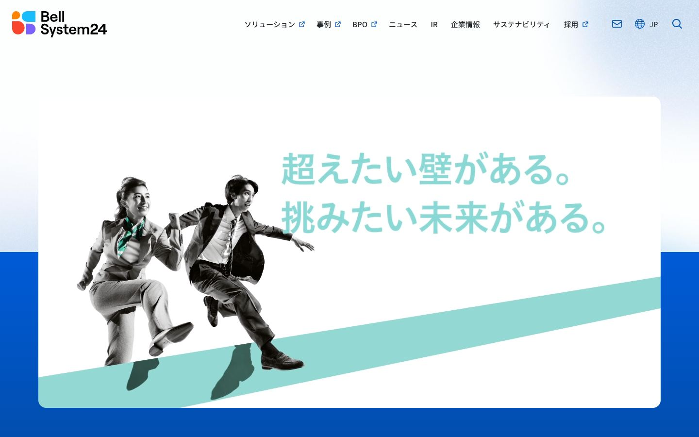
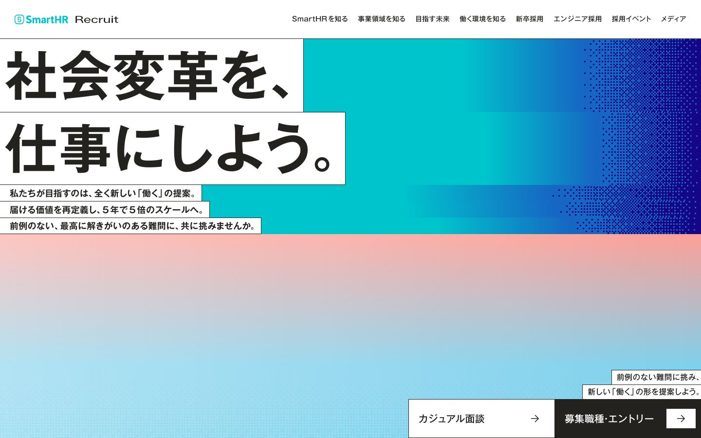
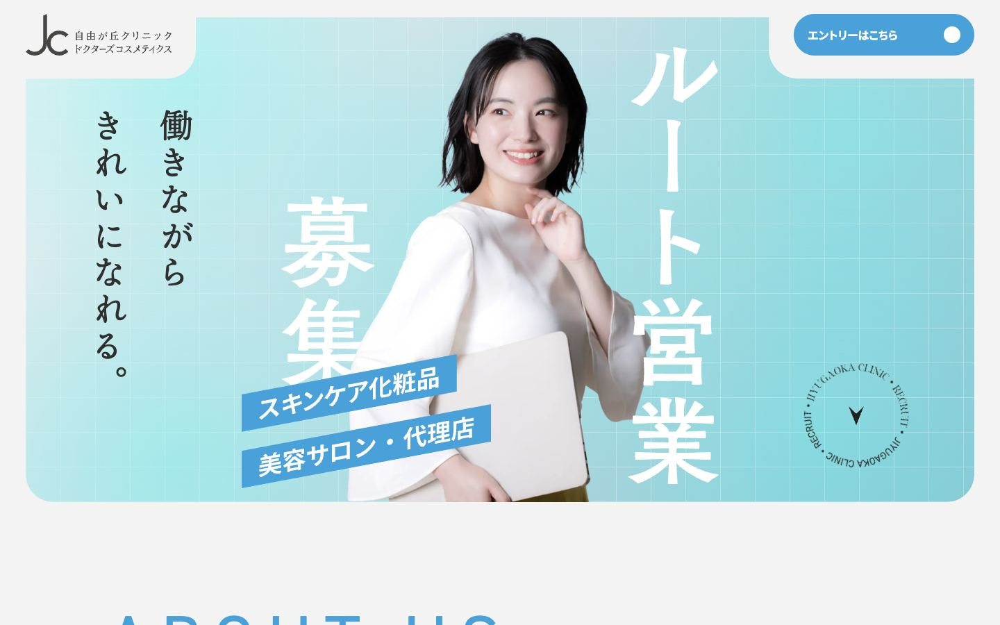
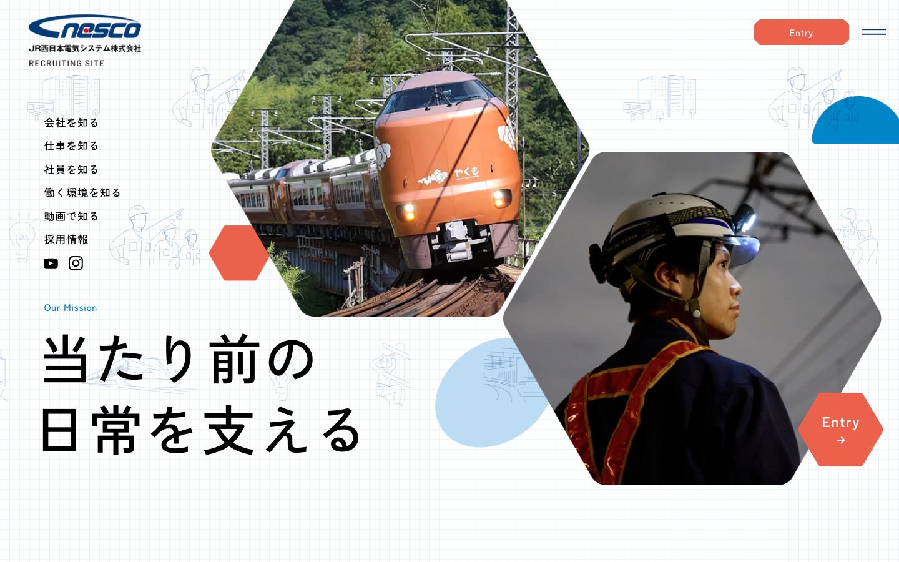
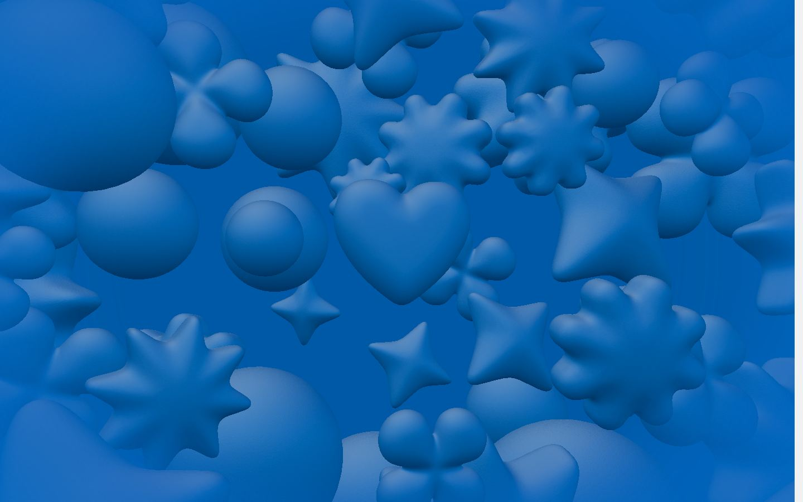
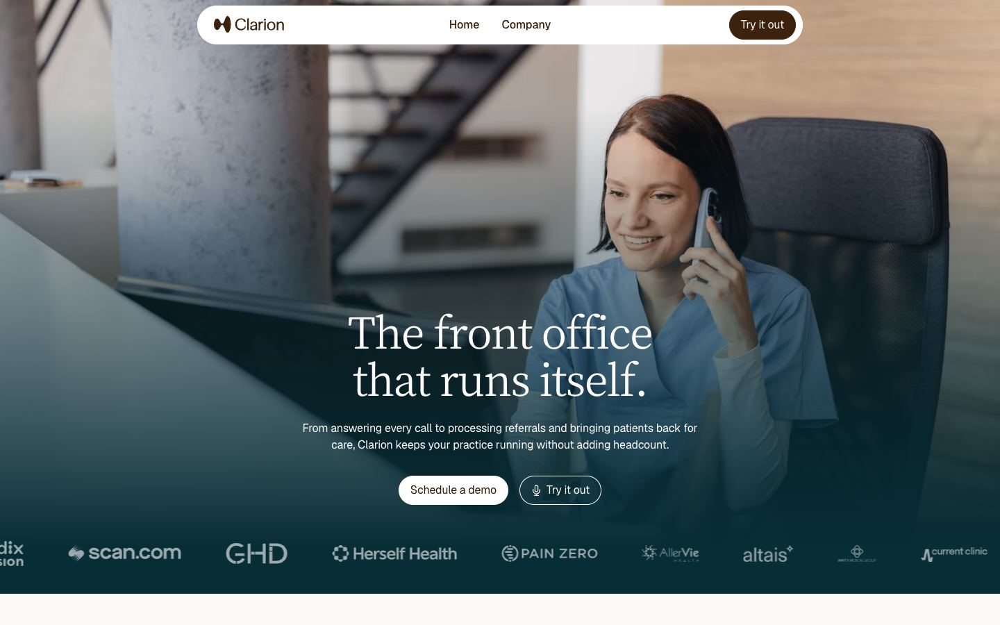
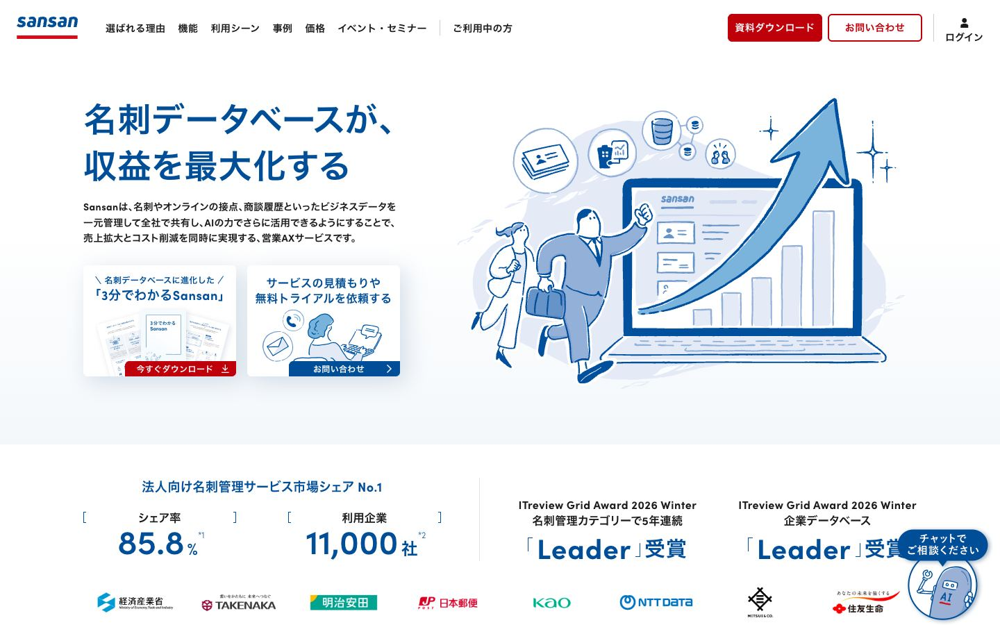
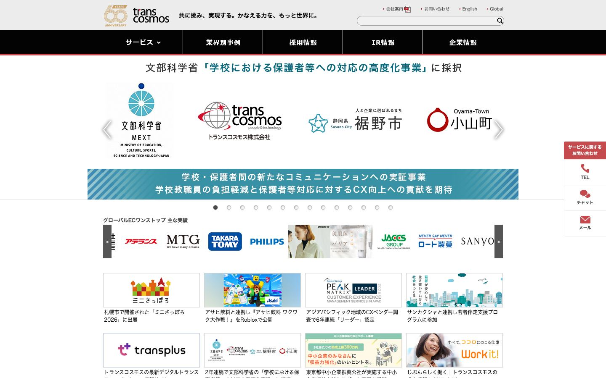

01. ベルシステム24｜白地に人物の切り抜き、斜めの色面、右寄せの大きなコピー。視線が対角線に流れる構成。
02. SmartHR 採用｜画面を支配する極太文字、段差のある白い文字面、鮮やかな色面。大きな主張と短い補足の階層。
03. 自由が丘クリニック ドクターズコスメティクス 採用｜大きな人物肖像、淡い背景と細い格子、縦方向の文字配置。人物の表情を主役にする。
04. JR西日本電気システム 採用｜角を落とした写真フレーム、白地の細いグリッド、主張と複数の現場写真をつなぐ配置。
05. Goodpatch｜青い立体オブジェクトの素材感と大胆なスケール。記憶に残る象徴物を中心に置く。06. Parloa｜仕事中の自然な人物を広い写真で見せ、空いた面に文字を重ねる。会話の文脈が伝わる場面づくり。
07. Clarion｜電話対応している一人の人物と、中央寄せの落ち着いた見出し。安心感と静かな視線誘導。
08. Sansan｜青い線画の人物と大きな業務画面を組み合わせ、仕事の仕組みを明快に見せる。09. サイボウズ kintone｜親しみやすい図形と丸いモチーフ、少数の要素で仕事を説明するイラスト。
10. トランスコスモス｜横方向の情報帯と整理されたモジュール配置。業務の種類を並べて俯瞰できる構造を人物写真へ翻訳する。